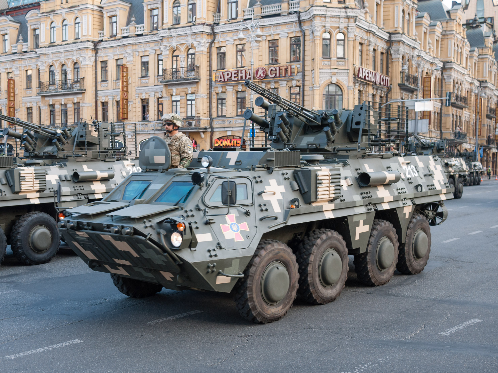

Історія створення
Концепція бронемашини розроблена на початку 2000-х Харківським конструкторським бюро машинобудування. Демонстраційний прототип вперше був представлений публіці в червні 2006 на виставці «Авіасвіт-21» в Києві[7][8]. Десантні випробування бронетранспортера завершилися в січні 2007. Серійне виробництво почалося 2008 після отримання схвалення від Міністерства оборони України[9].
24 липня 2012 року БТР-4Е був прийнятий на озброєння Збройних сил України[3]. У травні 2016 року Президент України Петро Порошенко нагородив розробників БТР-4Е Державною премією України в галузі науки і техніки. Почесну відзнаку отримали фахівці ДП «Харківське конструкторське бюро з машинобудування ім. О. О. Морозова»
Запуск серійного виробництва
Виробництво БТР-4 було налагоджене на ДП ХКБМ імені Морозова, де машини збирають у дослідному виробництві[11].
У грудні 2015 року стало відомо про підготовку до початку серійного виробництва на Житомирському бронетанковому заводі[12]. У травні 2016 року на ЖБТЗ було налагоджене виробництво корпусів бронетранспортерів[13][14]. Згодом у Житомирі налагодять повне виробництво БТР-4, що дасть змогу збільшити їх виробництво[15].
На початку серпня 2018 року стало відомо, що через доволі великий попит на БТР-4 на Заводі ім. В. О. Малишева було розпочато налагодження виробництва корпусів для цих машин. Загалом зварювальники, слюсарі та інструментальники заводу мають з'єднати понад 1700 деталей, з них більше 400 — броньованих. Раніше для серійного випуску БТР-4 на ДП «Харківське конструкторське бюро машинобудування імені О. О. Морозова» корпуси виробляв лише Лозівський ковальсько-механічний завод (ЛКМЗ)[16].
29 жовтня 2018 року ХКБМ було виготовлено перші сім БТР-4 зі спецсталі марки «71» виробництва України. Корпуси бронетранспортерів були виготовлені на ЛКМЗ[17].
Тим часом, за даними видання Defense Express стало відомо про наявність проблем із виробництвом корпусів до БТР-3 та БТР-4 на ЛКМЗ: через відтік працівників штат фахівців, залучених до виробництва корпусів бронетранспортерів, істотно скоротився, що, своєю чергою, істотно зменшило можливості підприємства з випуску цих виробів. Тому ДК «Укроборонпром» був вимушений терміново відрядити команду зварників із ХКБМ до ЛКМЗ. Також ці збої призвели до збільшення вартості БТР-3 та БТР-4. Крім того, тривала сертифікація виробництв бронекорпусів на ХКБМ та КБТЗ[18].
Наприкінці лютого 2019 року стало відомо, що ДП «Завод ім. Малишева» вже успішно завершив повний цикл випробувань першого зразка БТР-4, виготовленого на підприємстві, та був кваліфікований, як виробник цих машин. Аналогічну процедуру кваліфікації, за результатами випробувань, вже завершує і «ХКБМ ім. Морозова». Під час випробувань БТР-4 з новими корпусами пройшли декілька сотень кілометрів по бездоріжжю та дорогах із твердим покриттям та витримали випробування обстрілом, зокрема і з великокаліберних кулеметів. Таким чином, «Завод ім. Малишева» та «ХКБМ ім. Морозова» вже у 2019 році готові розпочати серійне виробництво БТР-4 з корпусів власного виготовлення
